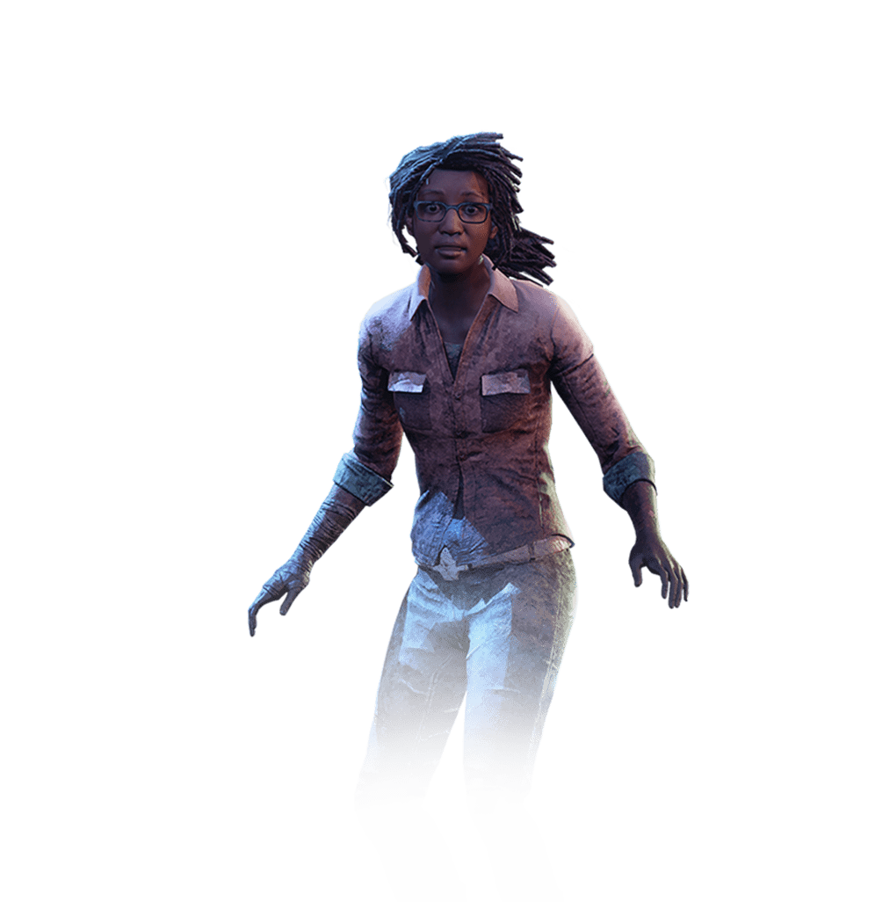
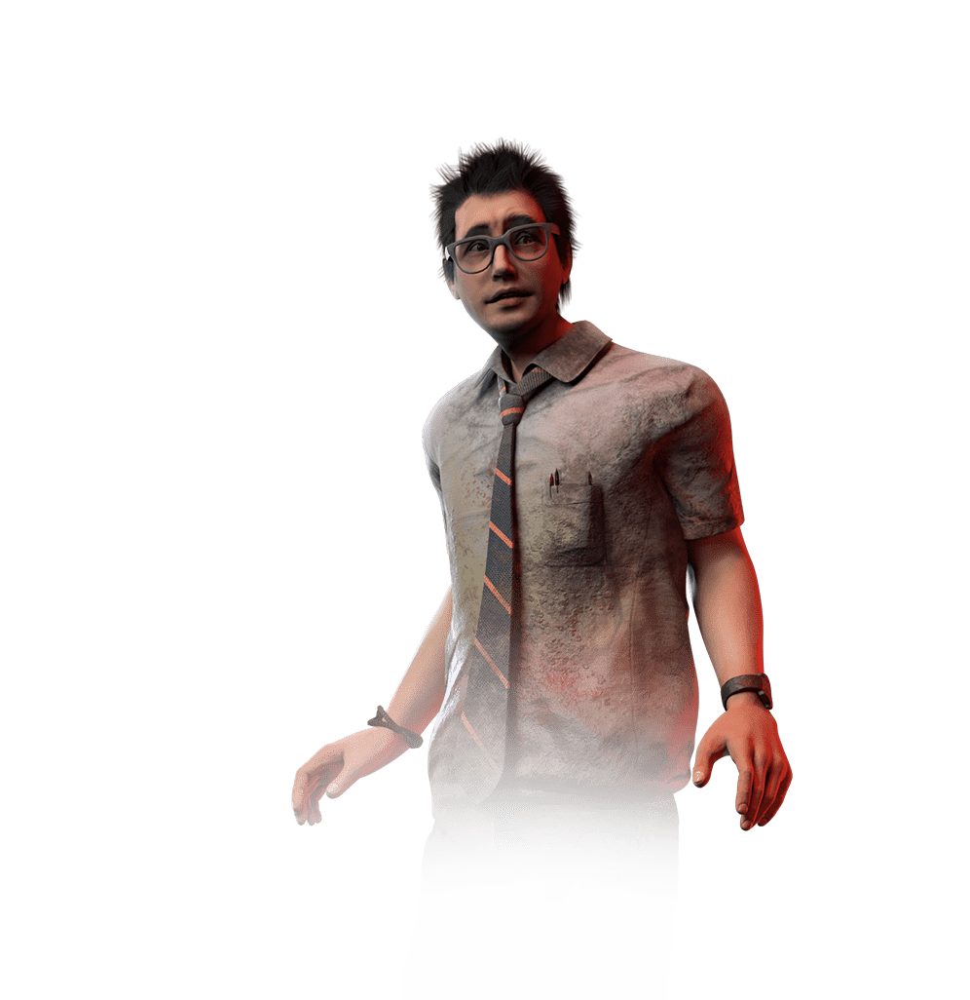
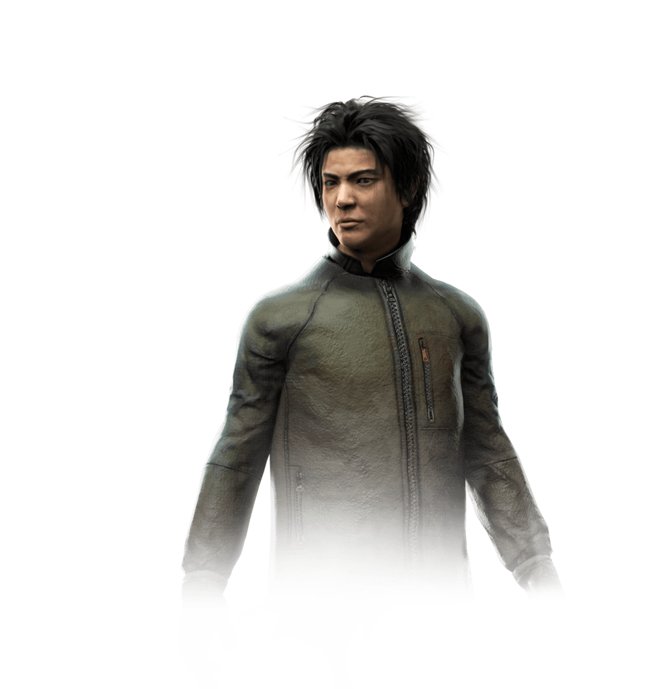
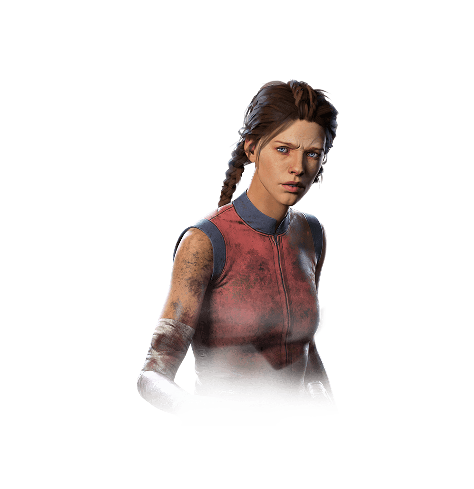
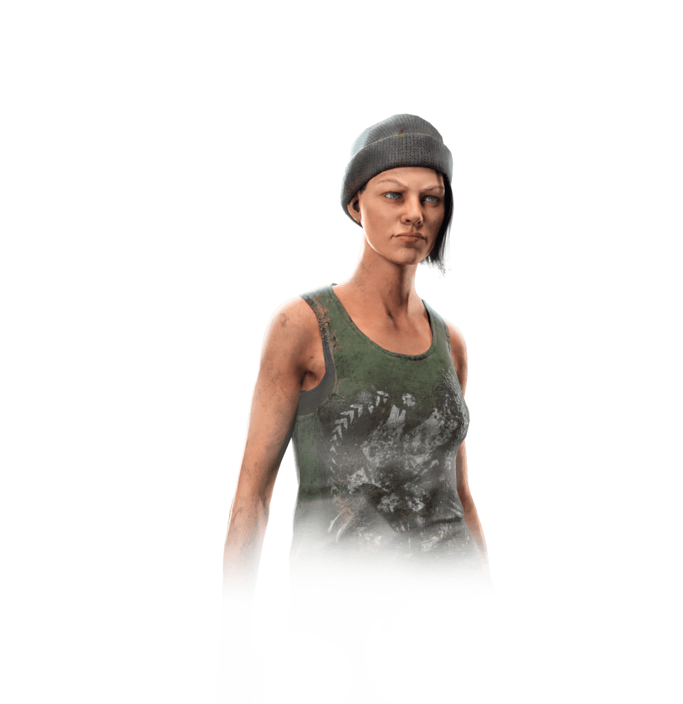
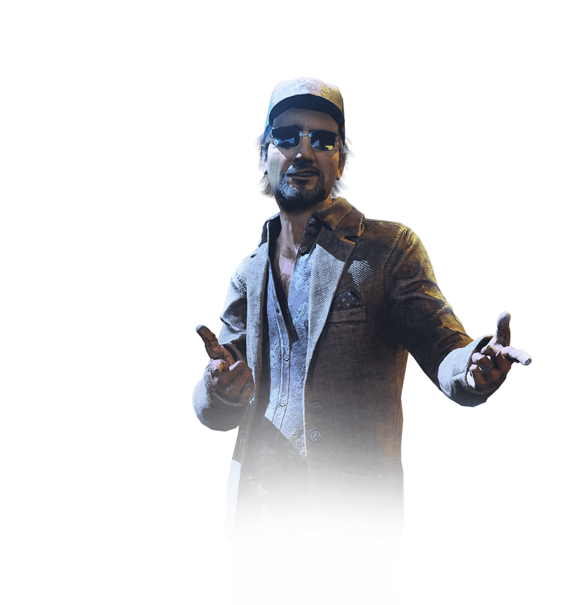

Claudette Morel
Claudette Morel é uma sobrevivente focada em cura e suporte. Seus perks permitem que ela se cure sozinha, ajude outros sobreviventes feridos e melhore a eficiência dos itens de cura. Ideal para quem gosta de ajudar a equipe a sobreviver.
Dwight Fairfield
Dwight Fairfield é um sobrevivente focado em suporte e liderança. Seus perks ajudam a acelerar reparos e a fortalecer a equipe quando estão juntos. Ele é ideal para quem gosta de coordenar e ajudar o grupo a escapar.
Jake Park
Jake Park é um sobrevivente conhecido por ser independente e habilidoso em se esconder. Seus perks ajudam a evitar ser detectado e a escapar de situações perigosas. Ele é ideal para jogadores que gostam de um estilo furtivo e de sobrevivência mais solo.
Meg Thomas
Meg Thomas é uma sobrevivente rápida e ágil. Seus perks aumentam sua velocidade e ajudam a escapar do assassino. Ela é perfeita para quem gosta de jogar de forma rápida e ousada, fugindo e distraindo o inimigo.
004261Nea Karlsson
Nea Karlsson é uma sobrevivente ágil e furtiva. Seus perks ajudam a se esconder, fugir rapidamente e dificultar a perseguição do assassino. Ela é ideal para quem curte um estilo de jogo sorrateiro e cheio de manobras rápidas.
Ace Visconti
Ace Visconti é um sobrevivente conhecido por sua sorte e habilidades em encontrar itens. Seus perks ajudam a melhorar a sorte, aumentar a eficiência de reparos e facilitar a busca por recursos. Ele é ótimo para jogadores que gostam de um estilo versátil e focado em suporte.